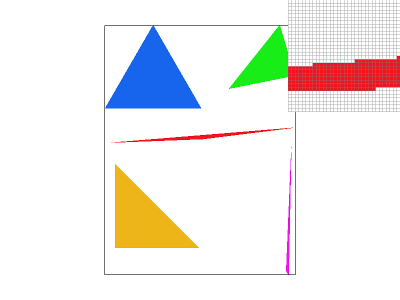
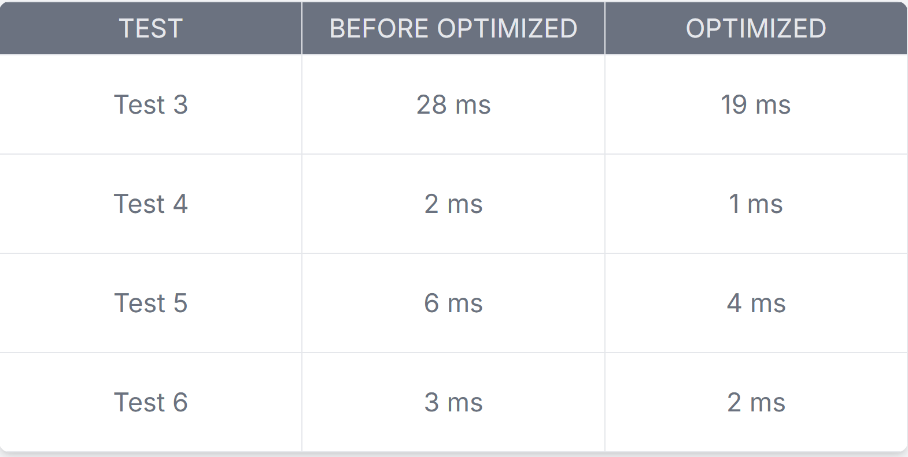
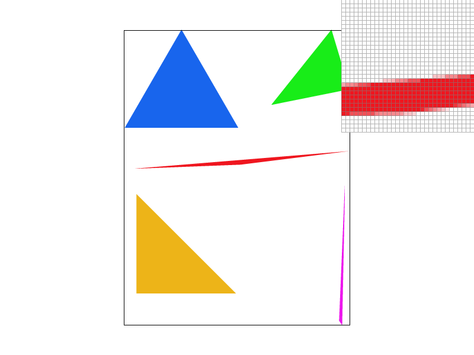
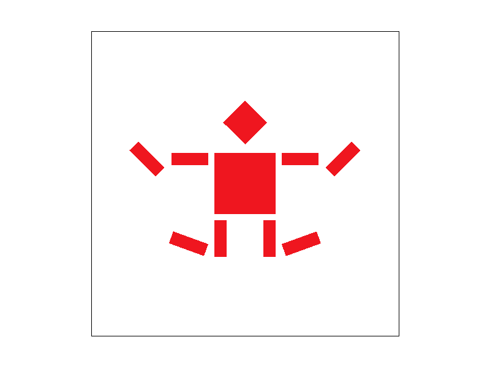
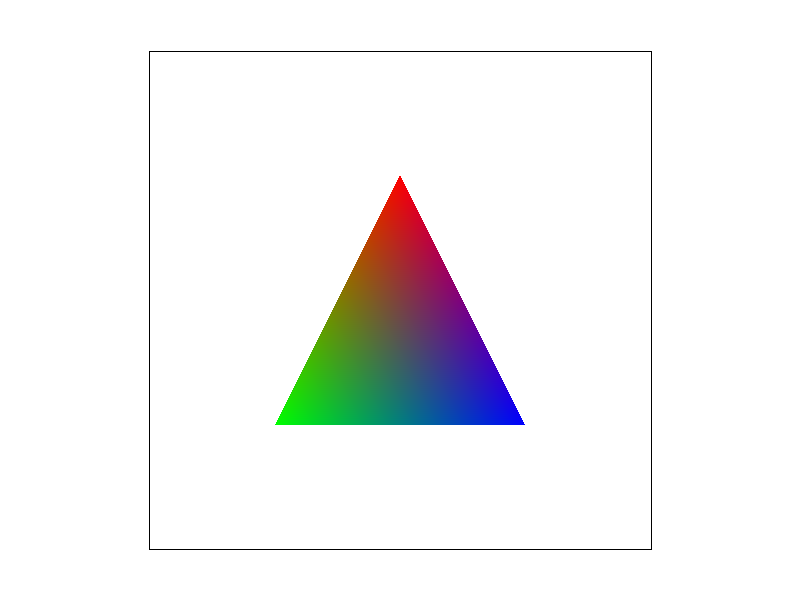
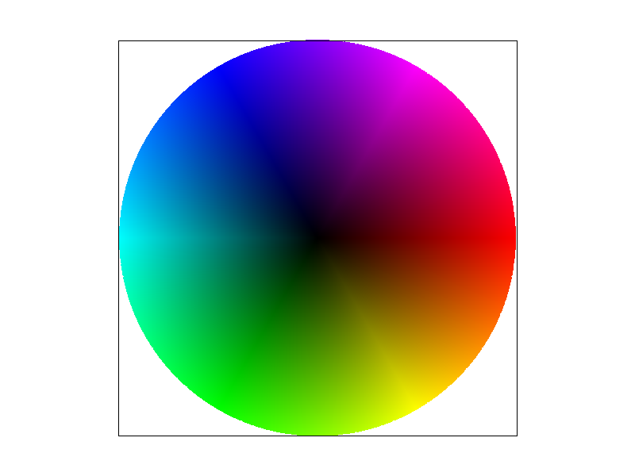
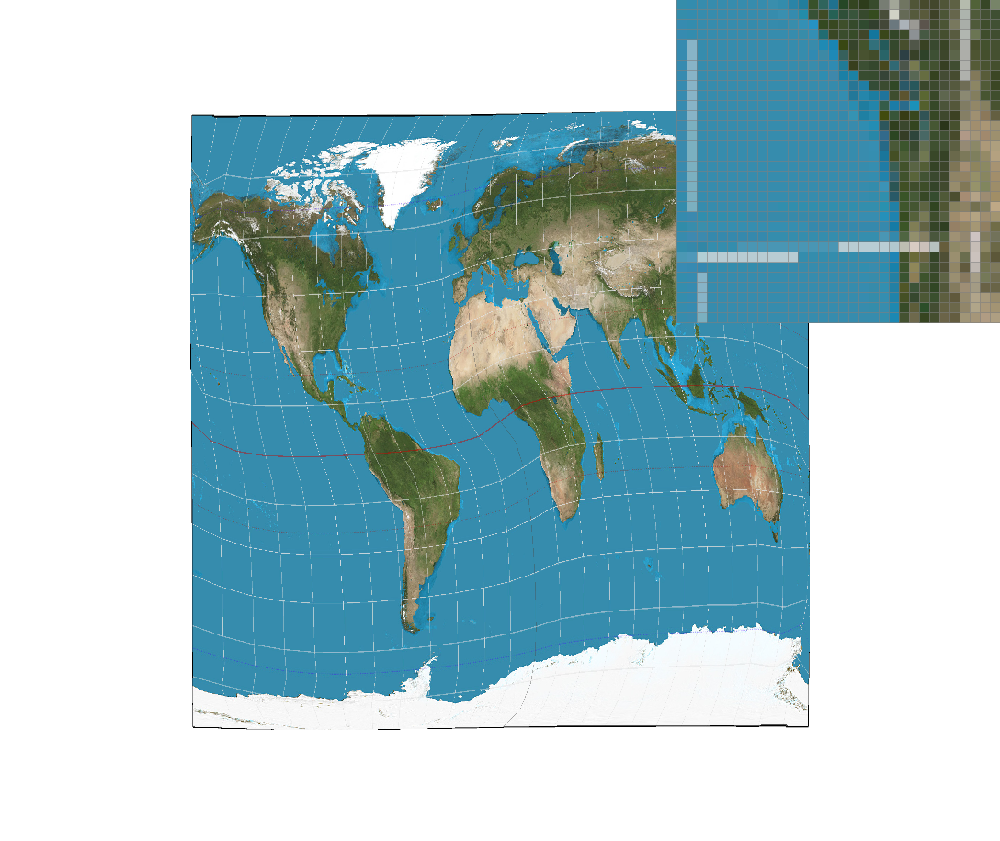
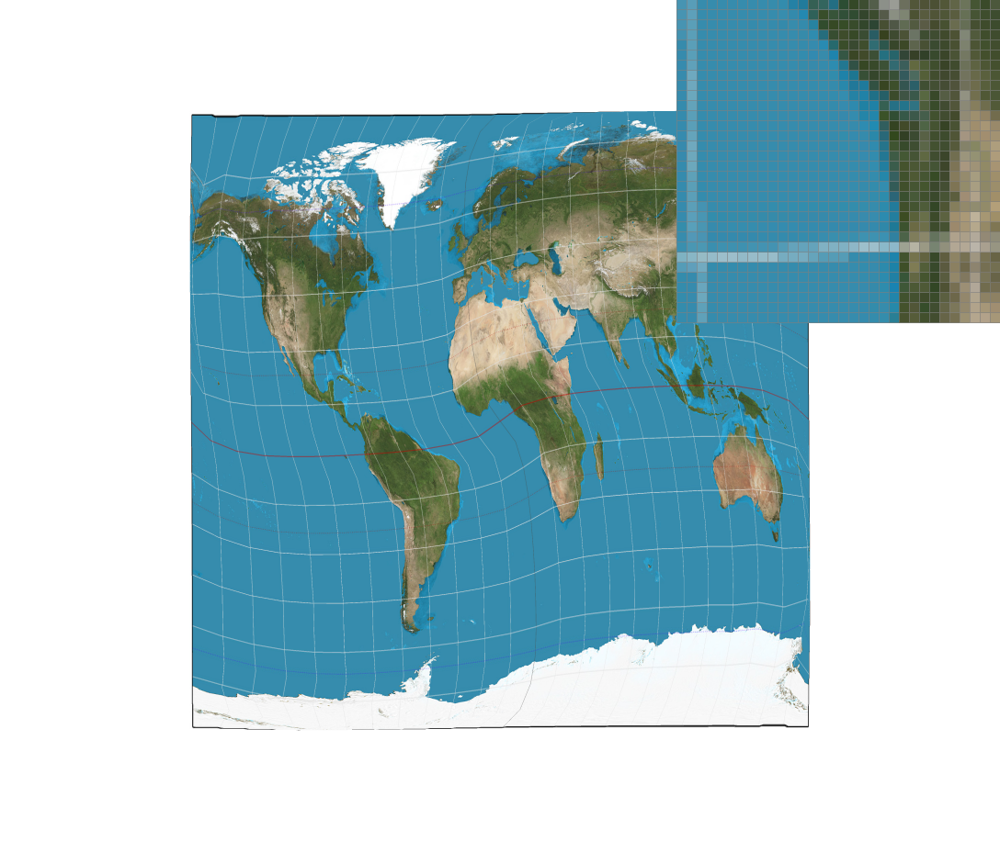
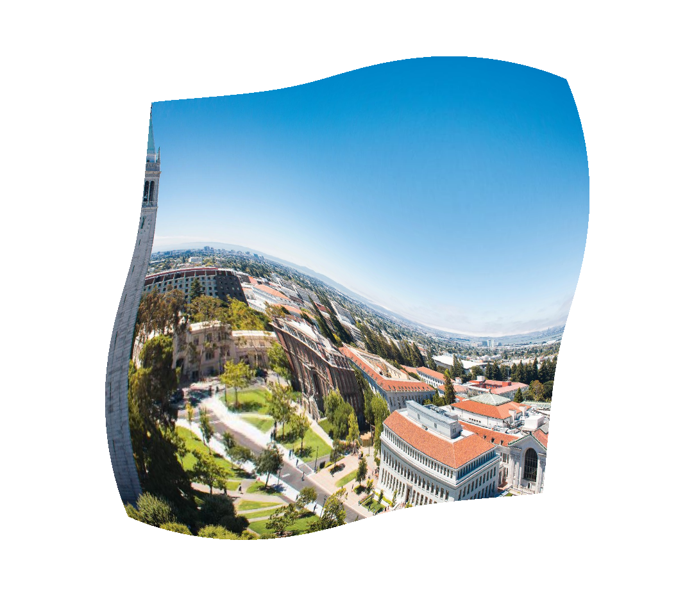

CS184/284A Spring 2025 Homework 1 Write-Up
Link to webpage: (TODO) cal-cs184-student.github.io/hw-webpages-orz/
Link to GitHub repository: (TODO) github.com/cal-cs184-student/hw-webpages-orz

Overview
Give a high-level overview of what you implemented in this homework. Think about what you've built as a whole. Share your thoughts on what interesting things you've learned from completing the homework.Task 1: Drawing Single-Color Triangles
According to the code structure in lecture 2, we can write a function to rasterize triangle easily with a helper function to check whether the point's coordinates is in triangle or not. I write a such helper function called in_triangle. This function will return 0 if it is not in triangle, and 1 in triangle. The method I use to check is line equation test. If the result of three line equation tests are all non negative, the point is in triangle. Then, what we should do is writing two loops to iteratre all points from (floor(min x), floor(min y)) to (ceil(max x), ceil(max y)), which is the bounding box of the triangle. From this perspective, my simple algorithm is no worse than one that checks each sample within the bounding box of the triangle.Extra optimization: I optimized the algorithm by not checking every samples in the bounding box to reduce the redudant arithmetic operations. I assigned a variable called prev in the outer loop, it will be assigned to 0 when entering a new outer loop and updated by every inner loop. There is a check when in_triangle = 0 in inner loop. If prev is 1, then we can determine that the our point is above the triangle now, and the remaining points in this x-coordinate don't need to check. Using this optimized algorithm, the time cost reduced roughly 1/3, and we can see in the table below.
I calculate the execution time through two clock(). One of clock() put before the call of draw function and one put after the draw() of the function. Their difference times 1000 and divides clock cycle/second to get the execution time, whose unit is ms.
|

|

|
Task 2: Antialiasing by Supersampling
Supersampling reduces jagged edges and makes them smoother by capturing more details in one unit pixel zone.Firstly, I update two functions: set_sample_rate and set_framebuffer_target to resize the sample_buffer with the size of (width * height * sample_rate);
Secondly, I update rasterize_triangle function by adding a new if branch. If sample-rate == 1, the function will be the same as what I write in task 1. Else, it will use four loops to complete the supersample. The first two loops iterate each pixel in the rendering area (x and y loops), and the inner two loops create a sqrt(sample-rate) * sqrt(sample-rate) grid of subpixel samples (i and j loops, both i and j less than sqrt of sample-rate(sr) ).
The precise position of each sample is calculated with this formula: \( Sample X = x + (i + 0.5)/sr \) \( Sample Y = y + (j + 0.5)/sr \)
There is a variable called index initialized in zero under x, y loops and before i, j loops. It will increase by 1 at the end of j loop. When the subpixel passes the in_triangle() check, we will call fill_pixel function to put it in sample_buffer[sample_rate * (y * width + x) + index]. Since index is between 0 and sample-rate - 1, it can put all grid information into sample-buffer.
Finally, I update resolve_to_framebuffer function by adding a for loop to sum the color of subpixels together. Then I divided them with sample-rate to get the color of one unit pixel after supersampled.
|
|
|

|
The images are progressively getting smoother as the sample rate increases. It is noticebale in the thin red horizontal edges under inspector and the edges of all triangles. The pixel inspector is positioned over what appears to be a thin area where supersampling has the most dramatic effect. In these areas, without supersampling, thin features (colors) will completely disappear between pixels or appear discontinuous. As the sample rate increases, these features become more consistently rendered.
Task 3: Transforms
The cubeman appears to be in a jumping or star-jump pose. The arms are extended outward and slightly upward at an angle, drawing by extra rotating 45 or -45 degrees. The legs are spread apart diagonally, drawing by extra rotating 110 or 250 degrees and translate (-40 70) or (40 70) coordinates. The angled limb positions create a sense of dynamic movement. This is a movement called Flashdance created by a Korean musician lismus*.|

|
Task 4: Barycentric coordinates
Barycentric coordinates is an expression to express a point's position relative to the vertices of a triangle. Given a triangle with three vertices A, B, and C, any point P inside (or even outside) the triangle can be expressed as a weighted sum of these three vertices:P = αA + βB + γC
where α, β, and γ are the barycentric coordinates. These coordinates satisfy the condition: α + β + γ = 1
Each coordinate represents the influence of a corresponding vertex on the position of P, which can be regarded as weight of three vertices color on position of P. If P is at one of the vertices, its corresponding coordinate is 1, while the other two are 0. Using the triangle image below as example, if P is at one of the vertices, its color will be pure blue, pure red, or pure green. Near the red vertex, the color is mostly red. Near the green vertex, the color is mostly green. Near the blue vertex, the color is mostly blue. The r, g, b of P's color times the weight from three vertices(α, β, γ), so this kind of coordinate can express the color influenced by three vertices color.
|

|

|
Task 5: "Pixel sampling" for texture mapping
Pixel sampling is a method used to determine the color of a pixel by referencing a texture. This is quite significant in texture mapping, where a 2D texture is mapped to a 3D model's surface. Since the coordinates on the model do not always align precisely with pixel positions in the texture image, we use sampling methods to calculate the color at a given point.Firstly, in sample_nearest function, I convert UV coordinates into integer pixel coordinates (x, y) by scaling them based on the texture's dimensions, then round them to pick the closest texel without interpolation, and finally get the color of the nearest texel using mip.get_texel(x, y).
As for sample_bilinear function, I convert UV coordinates into floating-point pixel coordinates (x, y) by scaling them based on the texture's dimensions, identifie the four nearest texels (u00, u01, u10, u11), use linear interpolation in two steps by first interpolating horizontally between left and right texels and then interpolating vertically between top and bottom interpolated values, and return a smooth blended color based on the surrounding texels.
Sampling Nearest method selects the color of the closest texture pixel to the mapped coordinate. Bilinear Interpolation sampling method computes a weighted average based on the distance from the texture coordinate to each of the four pixel unit regions.
|

|
|
|

|
|
Bilinear sampling is generally better in this case because it creates smooth transitions by interpolating values from surrounding pixels rather than the blocky, pixelated effect of nearest neighbor sampling; it reduces pixelation by averaging pixel values to blend colors naturally and avoid jagged edges; and it better preserves continuous data such as geographical maps by maintaining smooth color transitions, ultimately improving visual clarity and making zoomed-in regions more appealing and easier to interpret.
A large difference between nearest neighbor and bilinear sampling occurs when scaling, rotating, or warping images, as nearest neighbor produces blocky, pixelated artifacts while bilinear interpolation smooths transitions and preserves details more naturally.
Task 6: "Level Sampling" with mipmaps for texture mapping
Level sampling is a method used in texture mapping to determine the proper mipmap level for a given texture, helping to improve visual quality and rendering efficiency by reducing aliasing.Firstly, I follow the function in lecture to compute the level of mipmap in function get_level. Using derivatives of p_uv_dx and p_uv_dy, I can get maximum magnitude of them and takes a log2 on it to get the correct level.
Then, in the sample function, I assign a step to clamp level in valid range. In other words, if the level is out of bound, I will set it to 0. According to sp.lsm, If L_ZERO is used, the base level (0) is sampled ; if L_NEAREST is used, the closest integer level is chosen (round(level)); if L_LINEAR is used, interpolation is performed between mip levels. Depending on sp.psm, either nearest-neighbor or bilinear sampling is applied at the selected mip level.
|

|
|

|
|
When adjusting texture mapping, three parameters create tradeoffs among speed, memory, and antialiasing quality. Pixel sampling offers a choice between fast but jagged nearest-neighbor filtering or smoother but slower bilinear filtering. Level sampling ranges from the fast but aliasing with not too good quality L_ZERO approach to the smoother but more memory-intensive L_LINEAR filtering. Finally, increasing the sample-rate dramatically improves antialiasing quality but significantly reduces performance and increases memory usage. The optimal configuration should be based on balancing these factors for the specific application requirements.